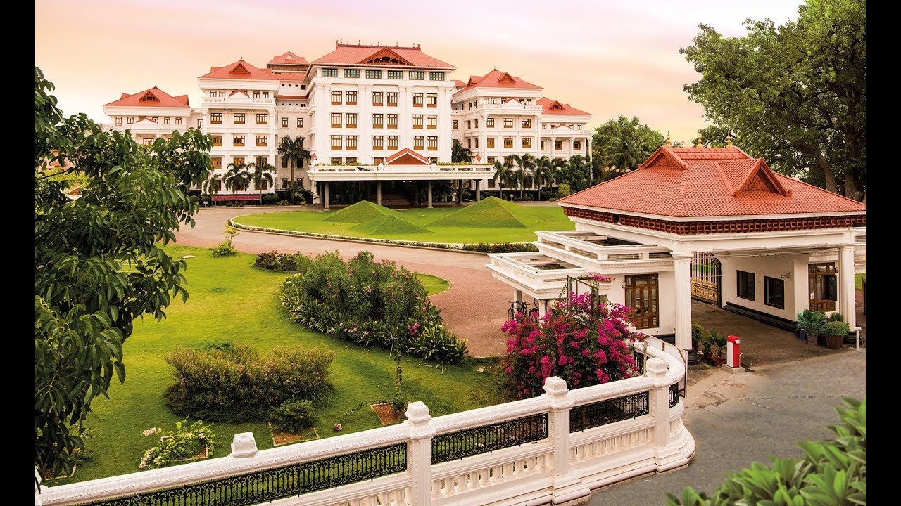
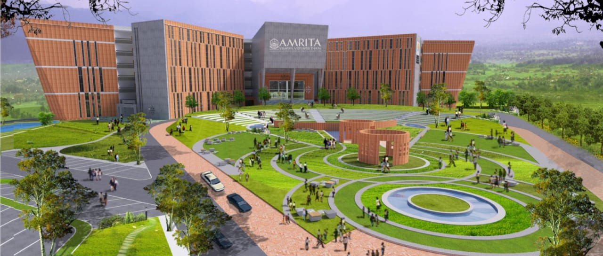
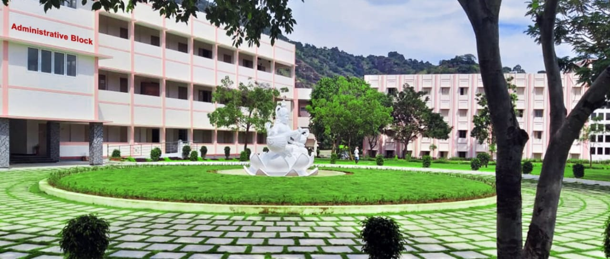
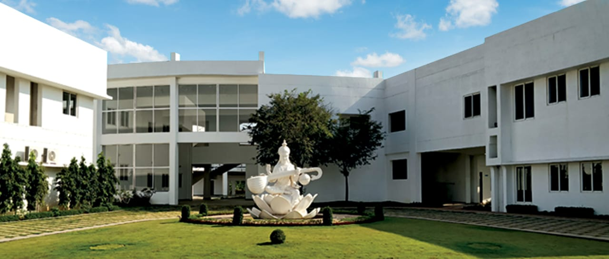
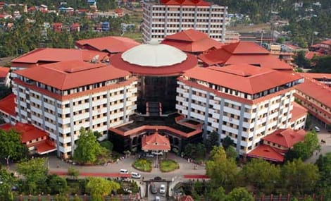
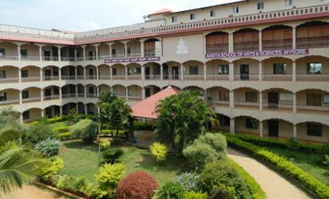
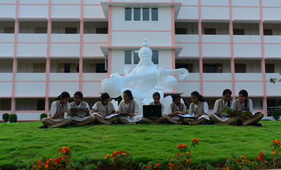

Amritapuri Campus
Amrita Vishwa Vidyapeetham's Amritapuri campus located in the pleasing village of Vallikavu is a multi-disciplinary research and teaching institute peacefully blended with science and spirituality.
ExploreAmaravati Campus
Welcome to our seventh campus at Amaravati in Andhra Pradesh. Amrita is a multi-disciplinary, research-intensive university and is accredited with the highest possible A++ NAAC grade and is the country’s 5th best-ranked university in the NIRF rankings 2021.
ExploreBengaluru Campus
Amrita University's Bengaluru Campus situated in Junnasandra, Karnataka, aims to create graduates with a solution mindset and a high degree of ethical standards.
ExploreChennai Campus
Amrita Vishwa Vidyapeetham's Chennai campus at Vengal, Tamil Nadu offers various engineering programs developed on a choice-based credit system following continuous evaluation by faculties who guide students.
ExploreCoimbatore Campus

Amrita University's Coimbatore campus started in a hidden village named Ettimadai provides over 120 UG, PG and doctoral programs to a student population of over 12,000 and faculty strength of nearly 1500.
ExploreFaridabad Campus
A land that has witnessed the historical prominence of ultra-modern facilities in India. A place where science, technology, and research merge to embrace good health across a 130-acre sprawling health city campus.
ExploreKochi Campus
Amrita Vishwa Vidyapeetham's Kochi campus is an extensive campus comprising a premier multispeciality hospital, Amrita Institute of Medical Sciences, School of Medicine, Dentistry, Nursing, Pharmacy, Allied Health Sciences, Center for Nanosciences along with a School of Arts and Sciences and Department of Management as well.
ExploreMysuru Campus
Amrita University's Mysuru campus situated at Bhogadi, Karnataka away from the hustle & bustle of the city combining state-of-the-art facilities offers a perfect environment that fulfills the aspirations of young minds and meets the requirements of future employers.
ExploreNagercoil Campus
Amrita Vishwa Vidyapeetham, situated in Erachakulam, Nagercoil is a beacon of educational excellence which operates under the esteemed Mata Amritanandamayi Math. Founded by Satguru Mata Amritanandamayi Devi (Amma), our institution is dedicated to providing holistic education, guided by Amma’s profound vision encapsulated in the philosophy of “Education for Life.”
Explore